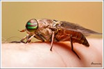
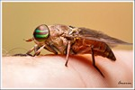
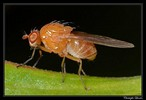
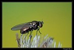
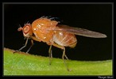
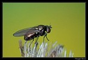
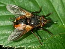
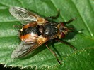

 



 

Key to families of Diptera
1.
- Antennae shorter, scape and pedicel usually short, flagellomeres heteronomous: first flagellomere large,
(sometimes annulated), second and other flagellomeres in the form of a stylus or arista; usually less than 6 flagellomeres. If 10 to 35 flagellomeres
(Rachiceridae), those are pectinate or serrate. Palpi usually with 1 or 2 segments


Neodiptera
Brachycera
- Antennae usually long, with scape and pedicel and at least 4 homonomous flagellomeres, usually longer than the head and thorax.
Or flagellum with a single consolidated segment, exclusive of stylus or arista. Palpi usually with 3-5 segments.


2
- Flagellum with a single consolidated segment, exclusive of stylus or arista.

3
- Flagellum composed of at least four homonomous flagellomeres, usually longer than the head and thorax. Palpi usually with 3-5 segments .
4
- Flagellum clavate with an elongate annulated stalk and inflated knob; eyes holoptic but
beneath head and not over antenna1 bases. Mouthparts atrophied. Very small aquatic flies (c. 2 mm;) Flies with wings extremely narrow,
with greatly reduced venation and extraordinarily long fringes or wingless.


Nymphomyiidae
- Pedicel swollen; flagellum at least twice as long as broad and with a minute apical seta. Remnant of larval eye strongly apparent.
Abdomen about three times as long as remainder of body.

Culicomorpha
Chironomidae
Oreadomyia albertae
- Wings between the more than 5 longitudinal veins with a network of fine crease-like lines.
5
- Wings without a network of crease-like lines between the main veins or wingless flies.


6
- Wings usually broad and fan-like. Main veins rudimentary. Antennae 6 segmented with 4 flagellomeres,
the terminal one excessively lengthened in male. Ocelli absent.


Deuterophlebiidae
- Wings longer and narrower than above. Antennae with 11-13 flagellomeres. Ocelli present; eyes frequently divided into 2 sections
(except Liponeura), discal cell absent. Long-legged flies, development in rapidly flowing streams.


Psychodomorpha
Blephariceridae
- Eyes divided into separated dorsal and ventral parts.

Perissommatidae
- Eyes not divided into separated dorsal and ventral parts.

7
- Scutum with a more or less distinct V-shaped suture; legs long and slender.


8
- Scutum without V-shaped suture. Legs variable .


10
- Halter with a basal appendage, the prehalter. V-shaped suture of scutum shallow
but double, conapical: one of the V-s goes from the anterior apex of notopleuron, the other one from the posterior apex of notopleuron,
to prescutellum. Wing with 1 anal vein, discal cell absent; vena spuria between R and M.


Ptychopteridae
- Halter without a prehalter. V-shaped suture simple but usually deep .
9
- Wing with 1 anal vein. Radial veins with 5 branches, M with 4 branches, discal cell present,
anal lobe of wing well-developed.

Psychodomorpha
Tanyderidae
- Wing with 2 anal veins reaching wing margin or wingless flies.

Tipulomorpha
- Ocelli present (Bibionomorpha exkl some Cecidomyiiidae (Porricondylinae,Winnertziinae,Cecidomyiinae).

Neodiptera
Bibionomorpha (most)
- Ocelli absent.

11
- Ten (in some Psychodidae 11) veins or their branches reaching the wing margin;
costa continuous around wing.


12
- Wing with 7 or less than 7 marginal veins reaching the wing margin; costa not continuous around wing, with a break,
or, usually ending before or near wing tip or wingless flies..


13
- Main crossveins near base of wing. Wing short and broad: broadly ovate, often pointed;
with long dense hairs on veins (moth-like flies); legs and body also with hairs. Sc very short.

Psychodomorpha
Psychodidae
- Crossveins not only near base of wing. Wing comparatively long. Sparsely to moderately hairy mosquito-like flies .

Culicomorpha (part)
- First tarsomere much shorter than second or absent.
Wings with not more than 6 longitudinal veins (usually 2 to 4); costa usually with a break beyond insertion of vein R4+5 or wingless flies.

Neodiptera
Bibionomorpha
Cecidomyiidae
Porricondylinae
Winnertziinae
Cecidomyiinae
- First tarsomere as long as or longer than the second .
Wing with 6 or 7 veins reaching margin; costa not continuous around wing, usually ending before or near wing tip or wingless flies. .

Culicomorpha (part)